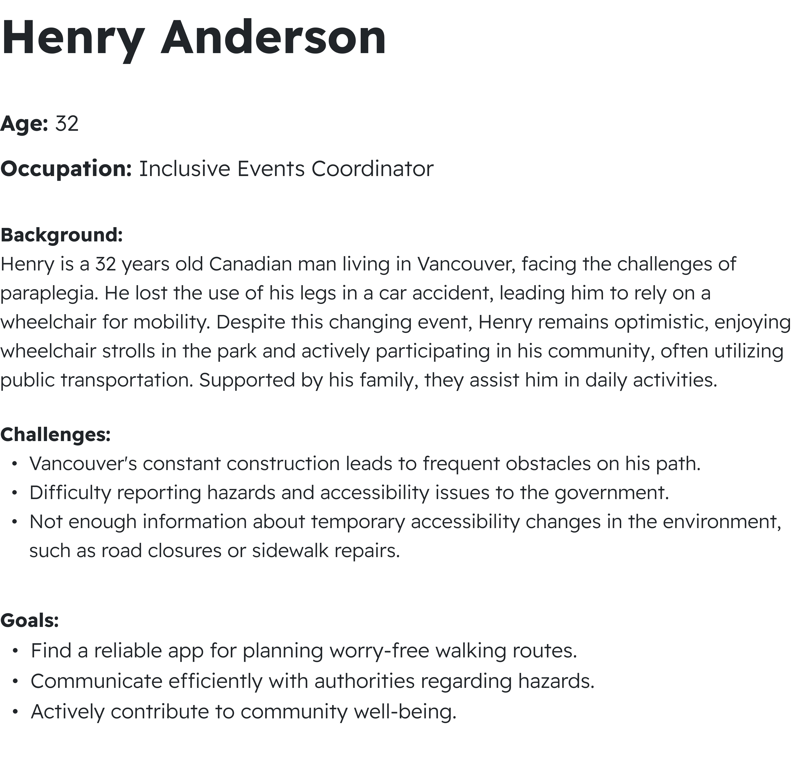
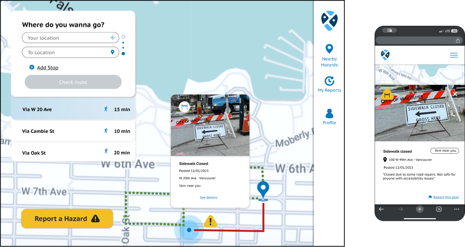
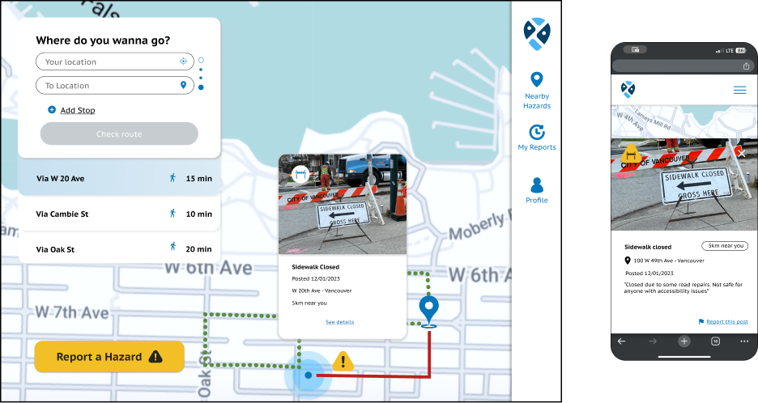

Description
Trout is a navigation web based app designed to keep users safe by providing hazard-free route suggestions based on real-time community reports. With user-based reporting, people can easily mark hazards by location, image, and description, helping others navigate safely. A dedicated government dashboard allows officials to track and respond to reported issues efficiently. By combining community input with smart routing, Trout aims to make daily commutes safer and more informed
Problem
After researching community safety challenges, we found that existing navigation and reporting systems fall short in addressing key issues that impact safety. Many hazards remain unreported, leaving users at risk. Limited accessibility features make it difficult for individuals with disabilities to navigate safely. Additionally, inadequate follow-up procedures mean that reported hazards often go unresolved, creating prolonged risks for all. Vulnerable groups are particularly affected, lacking reliable ways to avoid dangers. Trout was created to fill these gaps by providing a platform for real-time, community-driven hazard reporting and equipping officials with tools to ensure faster responses, fostering safer commutes for everyone.
Solution
To address these safety gaps, we developed Trout, a navigation app focused on hazard-free routing and community-based reporting. Trout offers route suggestions that avoid reported hazards, ensuring users travel along safer paths. With user-based reporting, individuals can easily mark hazards by specifying the exact location, adding images, and providing detailed descriptions. Our latest community reports feature displays incidents reported within a specific radius, offering real-time awareness of local hazards. Additionally, Trout includes a dedicated government dashboard, allowing officials to monitor reported issues, respond efficiently, and enhance community safety by acting on crowd-sourced information.
Main Features
01
Hazard-free routing
Route suggestions avoiding any reported hazards.
User-based reporting
Report hazard with exact location, image and details.
02
03
Latest community reports
List of reports made within a specific radius of user location.
Dashboard for government
Status updates on reports accessible by a government portal.
04
Competitors
Personas
User Flow
Wireframes
Mockups
 

Design Library